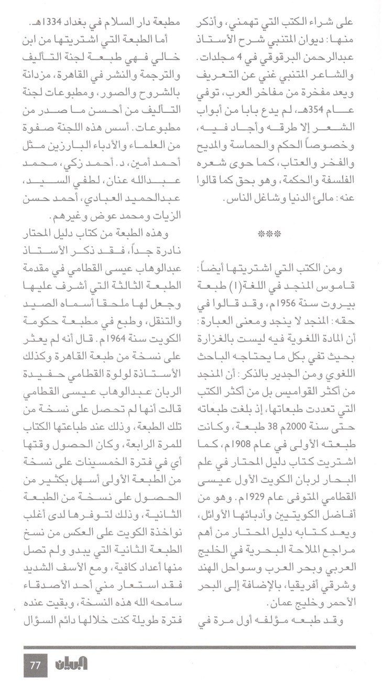

Al-Bayan magazine, date not on the pages sent · Magazine pages, Al-Bayan (Kuwait), «Mudhakkirat: Rihlati ma‘a Al-Kitab», part 3, by Khalid Salem Mohammed, pages 75 to 78
«My journey with books»: a rare copy of Eissa Al-Qatami’s Dalil Al-Muhtar, and the editions of Abdulwahab and Lolwa
What it is
The writer recalls the books he bought, among them «Dalil Al-Muhtar fi ‘Ilm Al-Bihar by Kuwait’s first captain, Eissa Al-Qatami, who died in 1929», one of the most important references on navigation in the Arabian Gulf, the Arabian Sea, the coasts of India and East Africa, the Red Sea and the Gulf of Oman. It was first printed by its author at Dar Al-Salam Press in Baghdad in 1334 AH; the writer’s copy, bought from his cousin, was the Cairo printing of the Lajnat Al-Ta’lif wal-Tarjama wal-Nashr, which he calls very rare: Abdulwahab Eissa Al-Qatami wrote, in the introduction to the third edition that he supervised, with his appendix «Al-Sayd wal-Tanaqqul», printed at the Kuwait Government Press in 1964, that he had never found a copy of the Cairo printing; and Lolwa Al-Qatami said she could not obtain one when the book was printed for the fourth time. He lent his copy to a friend and never got it back (page 78).
Why it matters
A first-hand account of how rare the early printing of Dalil Al-Muhtar became, and of the family’s later editions: the third, supervised by Abdulwahab Eissa in 1964, and the fourth, by Lolwa Abdulwahab.
Who is meant
The article calls Lolwa «the granddaughter of the captain Abdulwahab Eissa Al-Qatami». She is Lolwa Abdulwahab Al-Qatami, Abdulwahab Eissa’s daughter and Eissa’s granddaughter.
Page copies




Sources
Khalid Salem Mohammed, «Rihlati ma‘a Al-Kitab», part 3, Al-Bayan (Kuwait), pages 75 to 78
How this text was made: Pages 76 and 78 do not name the family; they are shown because the passage on Dalil Al-Muhtar begins on page 76 and ends on page 78. The issue number and date are not on the pages sent.
Open in the interactive site